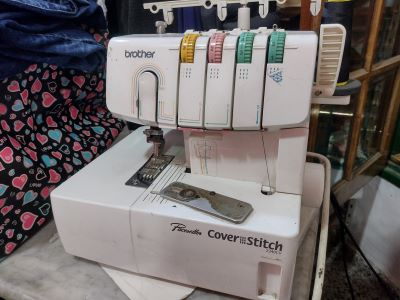

Brother Pacesetter
Collareta familiar/doméstica overlock de 3 hilos, especializada en ruedos en telas de punto.
Collareta familiar/doméstica overlock de 3 hilos, especializada en ruedos en telas de punto.

Máquina remalladora, focalizada para ropa interior, terminaciónes por dentro de la prenda y telas de punto.
Máquina de coser familiar/doméstica para confección de indumentaria, ojales, bordados y más...

Al igual que la Master, esta máquina se especializa en remallar ropa interior y telas de punto.

Máquina recta industrial, para costuras rectas, es decir confección de prendas.
Máquina recta industrial, para costuras rectas, es decir confección de prendas.